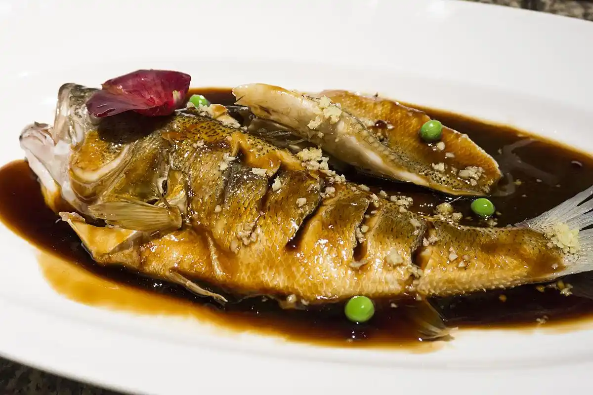

杭帮菜头牌名菜 | 杭州标志性美食 | 八百年历史传承

西湖醋鱼是浙菜杭帮菜头牌名菜，杭州标志性美食，别名叔嫂传珍，拥有八百余年历史，前身是南宋名点宋嫂鱼羹，自古便是西湖宴席必上菜，楼外楼、知味观等老字号为代表店家。
相传西湖边宋氏兄弟以打鱼为生，兄长被当地恶霸害死，叔嫂二人赴官府告状反遭迫害，被迫分离。临行前嫂嫂用西湖草鱼，加糖、米醋烧制一碗酸甜鱼给小叔，寓意 "苦尽甜来、勿忘辛酸"。多年后小叔功成名就，凭这道醋鱼的独特味道寻回嫂嫂，这道菜也因此得名 "叔嫂传珍"，流传至今。
原料讲究
选用鲜活草鱼，烹制前需饿养 2-3 天，让鱼吐净泥沙，去除土腥味；标准鱼重约 700 克，肉质细嫩紧实。
独特做法（无油炸）
刀工：鱼身剖开分两片，标准 "七刀半"，刀口均匀不破鱼皮；
熟制：清水沸水汆烫断生，仅 3 分钟左右，最大限度保留鱼肉鲜嫩；
糖醋汁：本地米醋、白糖、酱油、绍酒、湿淀粉调配，薄芡透亮，撒姜末提香；
口味先酸后甜、酸香为主，不厚重腻口，上品醋鱼细品自带蟹鲜风味。
成品特点
鱼形完整、鱼鳍挺立，红亮酱汁平铺鱼身，鱼肉滑嫩不散，醋香浓郁，突出湖鱼本鲜。
南宋定都临安（杭州），民间厨娘宋五嫂创制鱼羹，宋高宗品尝后大加赞赏，鱼鲜醋烹的做法风靡西湖市井；后世改良为干汁醋鱼，褪去羹汤，形成如今西湖醋鱼样式。古代螃蟹珍贵，百姓便以这道醋鱼替代蟹鲜，是平民美食登上大雅之堂的代表菜品，也是西湖人文与饮食结合的经典符号。
区别于北方厚重糖醋鱼，西湖醋鱼属于清淡文人菜，酸甜柔和、不掩盖鱼肉原味；传统吃法小口品尝鱼肉，搭配龙井茶、杭式点心中和酸味，是游览西湖必尝特色佳肴。